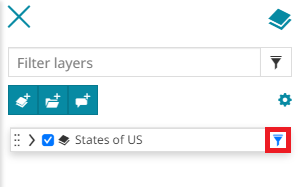
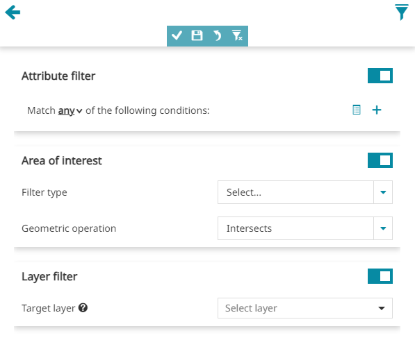
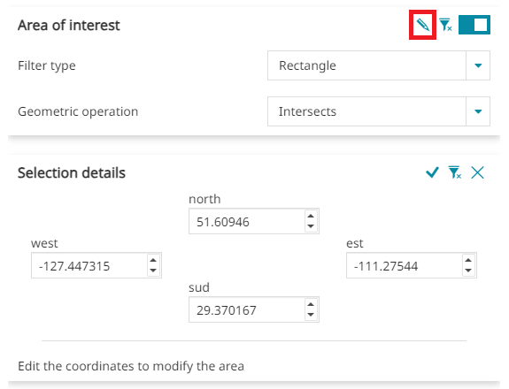
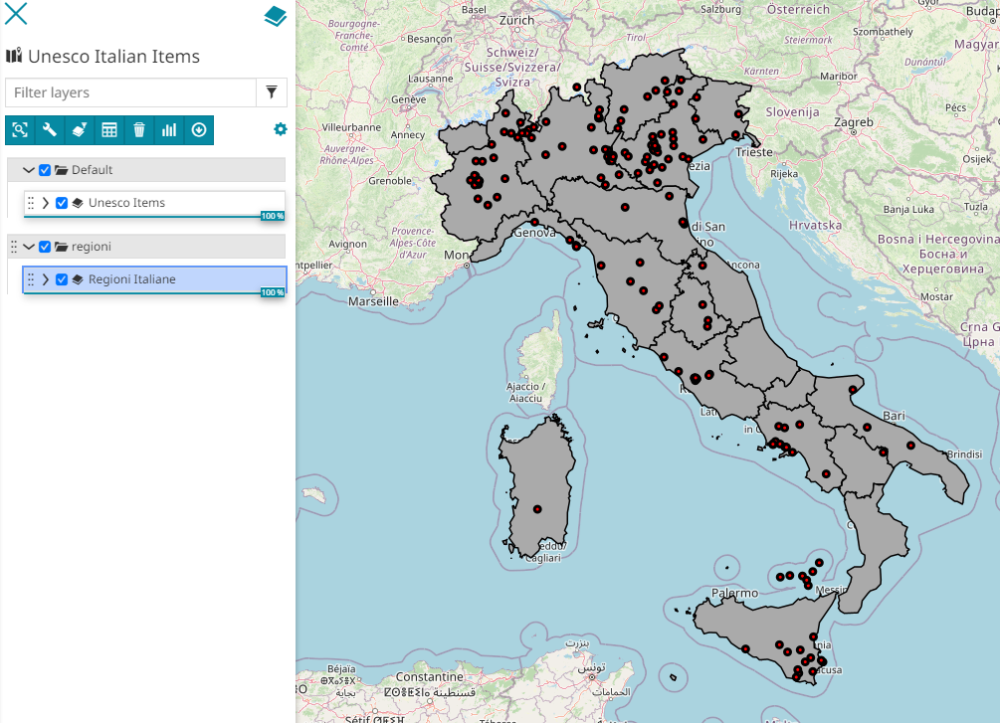

Filtering Layers
When using vector layers it might be useful to work with a subset of features. About that, MapStore let the user set up a Layer Filter that acts directly on a layer with WFS available and filter its content upfront. The map will immediately update when a filter is applied.
Warning
The MapStore's filtering capabilities are working on top of the WFS specifications so that service must be enabled if you want to filter a layer using the tools described in this section.
Filter types
In MapStore it is possible to apply filters on layers in three different ways:
-
With the Layer Filter tool available in TOC
-
With the Advanced Search tool available from the Attribute Table
-
With the Quick Filter available in the Attribute Table
Layer Filter
This filter is applicable from the Filter layer button in TOC's Layers Toolbar and it will persist in the following situations:
- Using other tools like the Identify tool:
- Applying another type of filter
- Opening the map next time (you need to Save the map from the Side Toolbar after applying a filter)
Once a Layer filter is set, it is possible to enable/disable it simply by clicking on the button that will appear near the layer name in TOC:

This filter is applied through the Query Panel. Once the settings are chosen, it is possible to Apply them. After that the user can:
-
Undo the last changes
-
Reset the filter to the initial situation
-
Save the filter in order to make it persistent
Query Panel
This tool is used to define advanced filters in MapStore. It includes three main sections:
-
Attribute Filter
-
Area of Interest
-
Layer Filter

Attribute filter
This filter allows to set one or more conditions referred to the Attribute Table fields.
First of all it is possible to choose if the filter will match:
-
Any conditions
-
All conditions
-
None conditions
After that, the user can insert one or more conditions, that can also be grouped in one or more condition groups (use the button in order to create a group).
A condition can be set by selecting a value for each of the three input boxes:
-
The first input box allows to choose a layer field
-
In the second input box it is possible to choose the operation to perform (selecting a text field can be =, like, ilike or isNull, selecting a numerical field, can be =, >, <, >=, <=, <> or ><)
-
The third input box (in case of fields of type String) provides a paginated list of available field values already present in the layer's dataset (a GeoServer WPS process is used for this). In case of numeric fields, the user can simply type a value to use for the filter or use instead the Date Picker tool for the Date, Time and DateTime attributes as described above in the Quick Filter by attributes section.
Note
For the Query Panel, the Date Picker tool also allows the user to perform select Quick Date Selections such as: Now, Yesterday for single Date or DateTime and Tomorrow or also quick date ranges like Now, This week, This month, 7 days from now, 30 days from now and 90 days from now for Date or DateTime intervals depending on the operator selected. An example can be the following:
Note
the "paginated list of available field values" above is available only if the server provides the WPS process gs:PagedUnique
A simple Attribute Filter applied for a numerical field can be, for example:
Area of interest
In order to set this filter the user can:
-
Select the Filter type by choosing between Viewport, Rectangle, Circle, Polygon (selecting Rectangle, Circle or Polygon it is necessary to draw the filter's geometry on the map)
-
Select the Geometric operation by choosing between Intersects, Is contained, Contains
Applying a Rectangle filter with Intersect operation, for example, the process could be similar to the following:
Once this filter is set, it is always possible to edit the coordinates and the dimensions of the drawn filter's geometry by clicking on the Details button . Editing a circle, for example, it is possible to change the center coordinates (x, y) and the radius dimension (m):

Note
Also for Dashboard widgets (charts, table and counter) it is possible to define a spatial filter without necessarily connect the widget to the map widget by using the usual Area of interest filtering section. The example below sows how:
Layer filter
This tool allows to set cross-layer filters for a layer by using another layer or even the same one.
Warning
This filter tool requires the Query Layer plugin installed in GeoServer
In order to set up a cross-layer filter the options below are required:
-
Target layer (between those present in the TOC)
-
Operation to be chosen between Intersects, Is contained or Contains
-
Optionally some Conditions (see Attribute filter)
In order to better understand this type of filter, let's make an example. We suppose that the user want to filter the Italian Regions with the Unesco Item's one:

In particular, if our goal is to take a look at the Italian Regions that contain the Unesco sites with serial code=1, the operations to perform can be the following:
Note
The Layer Filter option is only available for widgets defined in Map viewer and not for Dashboards widgets.